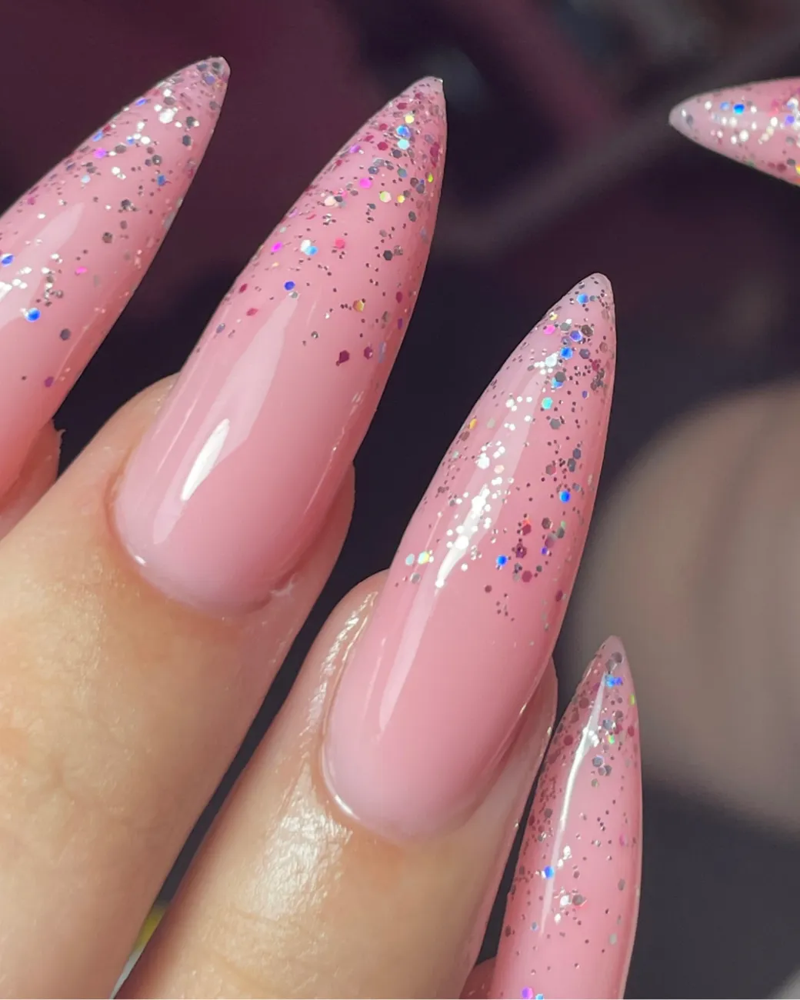
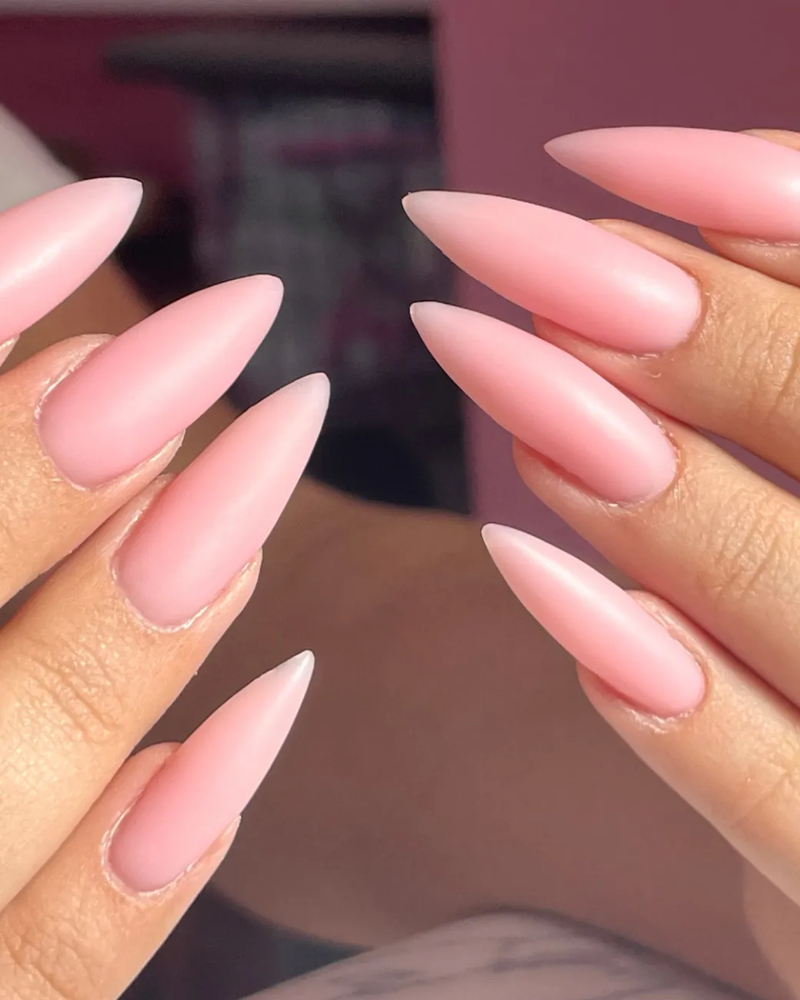

Codex Web — Sugar Nails02

Затова сайтът
е черен.
Розовото остава за това, което се натиска.
Като „Запази час“ в кръгчето.

Девизът на салона. В сайта го казахме иначе.→
Розовото остава за това, което се натиска.
Като „Запази час“ в кръгчето.
Имената са взети от кода на сайта. Розовото е
цветът на Sugar Nails — от логото им.
Руски форми — по подразбиране
д л в г
Български — както е в сайта
д л в г
Сладка прецизност.
Шрифтът е Sofia Sans, създаден в България. Сайтът
е маркиран като български (lang="bg"), затова
браузърът показва буквите така, както ги пишем.


1
Цените са на видно — от 25 €.
2
Галерията се плъзга с пръст.
3
„Запази час“ стои долу, под палеца.


0,65 с
0,9 с
3,6 с
Кристалите падат като пудра захар и се подреждат във формата на нокът. Рисуват се на живо, при всяко отваряне на сайта.
Ако телефонът е с „Намаляване на движението“,
анимацията не тръгва.
Не на шаблон. Пиши ни „сайт“ в DM.

Новият сайт на Sugar Nails→
390 × 844 px
запис на екрана
без монтаж
Отговорът е в следващата история.
Сладки
детайли.
Сайтът на Sugar Nails пише с българските форми на буквите. Малко хора го забелязват. Всички го усещат.
Искаш сайт, който звучи като теб?
Пиши ни „сайт“ ↓